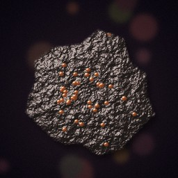
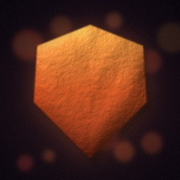

wild herb
A bundle of aromatic leaves.
Foraging
Value 5c · shop pays 2c · Exchange pays 3c
moonbloom
A pale flower that glows faintly at night.
Foraging (skill 8+, rare)
Value 25c · shop pays 10c · Exchange pays 15c

iron ore
A rusty lump heavy with iron.
Mining
Value 10c · shop pays 4c · Exchange pays 6c
silver nugget
Bright and surprisingly heavy.
Mining (skill 10+, rare)
Value 40c · shop pays 16c · Exchange pays 24c
river trout
Silver-flanked and fresh.
Fishing
Value 6c · shop pays 2c · Exchange pays 3c
river pearl
A small, lustrous pearl.
Fishing (skill 12+, rare)
Value 50c · shop pays 20c · Exchange pays 30c
mithril ore
Silver-blue metal, light as a feather.
Mining (skill 25+, very rare), monster drops from level 12
Value 100c · shop pays 40c · Exchange pays 60c

dragon scale
Hard as steel, warm to the touch.
Monster drops from level 28
Value 200c · shop pays 80c · Exchange pays 120c
Sources and uses
| Material | How to get it | Where | Used in |
|---|---|---|---|
| wild herb | Foraging | Whisperwood (10), Redrock Trail (4), Sunken Marsh (5), Sunscorch Dunes (5), Thornwild Court (3), Starship Aurora (1), The Drowned Reach (1), Modern District (1), The Primeval Rift (2) | red stim (Brewing), medkit (Brewing), blue cell (Brewing), tonic (Brewing), strong stim (Brewing), azure cell (Brewing), military stim (Brewing), noodle bowl (Cooking), fish stew (Cooking), hunters feast (Cooking), salve (Prospector crafting), tonic (Prospector crafting) |
| moonbloom | Foraging (skill 8+, rare) | Whisperwood (10), Redrock Trail (4), Sunken Marsh (5), Sunscorch Dunes (5), Thornwild Court (3), Starship Aurora (1), The Drowned Reach (1), Modern District (1), The Primeval Rift (2) | tonic (Brewing), strong stim (Brewing), azure cell (Brewing), military stim (Brewing), cobalt cell (Brewing), trauma kit (Brewing), sapphire cell (Brewing), revive kit (Brewing), hunters feast (Cooking), frontier banquet (Cooking), tonic (Prospector crafting) |
| iron ore | Mining | Ashfall Junction (1), Whisperwood (1), Barrow Crypts (7), Silverado Mines (7), Frostpeak Station (5), Ember Wastes (4), Shattered Citadel (4), Tombstone Gulch (2), Starship Aurora (1), Brimstone Rail Yard (2), Modern District (1), The Primeval Rift (2) | scrap knife (Smithing), miners pick (Smithing), bike helmet plate (Smithing), iron buckler (Smithing), iron sword (Smithing), iron boots (Smithing), iron helm (Smithing), iron shield (Smithing), iron mail (Smithing), steel sword (Smithing), steel boots (Smithing), steel helm (Smithing), and 17 more |
| silver nugget | Mining (skill 10+, rare) | Ashfall Junction (1), Whisperwood (1), Barrow Crypts (7), Silverado Mines (7), Frostpeak Station (5), Ember Wastes (4), Shattered Citadel (4), Tombstone Gulch (2), Starship Aurora (1), Brimstone Rail Yard (2), Modern District (1), The Primeval Rift (2) | steel sword (Smithing), steel boots (Smithing), steel helm (Smithing), steel shield (Smithing), steel mail (Smithing), runed sword (Smithing), runed boots (Smithing), runed helm (Smithing), runed shield (Smithing), runed mail (Smithing), adamant sword (Smithing), adamant boots (Smithing), and 7 more |
| river trout | Fishing | Whisperwood (2), Sunken Marsh (4), Sunscorch Dunes (1), Thornwild Court (1), The Drowned Reach (2) | grilled trout (Cooking), noodle bowl (Cooking), fish stew (Cooking), pearl chowder (Cooking), hunters feast (Cooking), frontier banquet (Cooking), grilled fish (Prospector crafting) |
| river pearl | Fishing (skill 12+, rare) | Whisperwood (2), Sunken Marsh (4), Sunscorch Dunes (1), Thornwild Court (1), The Drowned Reach (2) | trauma kit (Brewing), sapphire cell (Brewing), revive kit (Brewing), pearl chowder (Cooking), frontier banquet (Cooking), pearl pendant (Prospector crafting) |
| mithril ore | Mining (skill 25+, very rare), monster drops from level 12 | Ashfall Junction (1), Whisperwood (1), Barrow Crypts (7), Silverado Mines (7), Frostpeak Station (5), Ember Wastes (4), Shattered Citadel (4), Tombstone Gulch (2), Starship Aurora (1), Brimstone Rail Yard (2), Modern District (1), The Primeval Rift (2) | mithril sword (Smithing), mithril boots (Smithing), mithril helm (Smithing), mithril shield (Smithing), mithril mail (Smithing), runed sword (Smithing), runed boots (Smithing), runed helm (Smithing), runed shield (Smithing), runed mail (Smithing), adamant sword (Smithing), adamant boots (Smithing), and 16 more |
| dragon scale | Monster drops from level 28 | Dropped by monsters level 28 and up (15% each) | dragon sword (Smithing), dragon boots (Smithing), dragon helm (Smithing), dragon shield (Smithing), dragon mail (Smithing), dragon sword (Prospector crafting), dragon mail (Prospector crafting), dragon helm (Prospector crafting), dragon shield (Prospector crafting), dragon boots (Prospector crafting) |
Selling
Every material sells at every shop for 40% of its value (at least 1 credit). The Salvage Exchange (south, east, east from the square) pays 60% and sells the basic materials. Use sell materials, or sell all to include loot. Your bag is sold too.